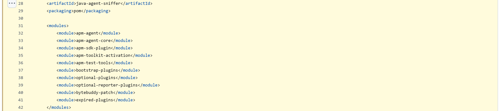
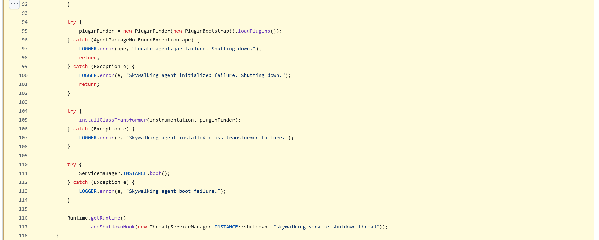
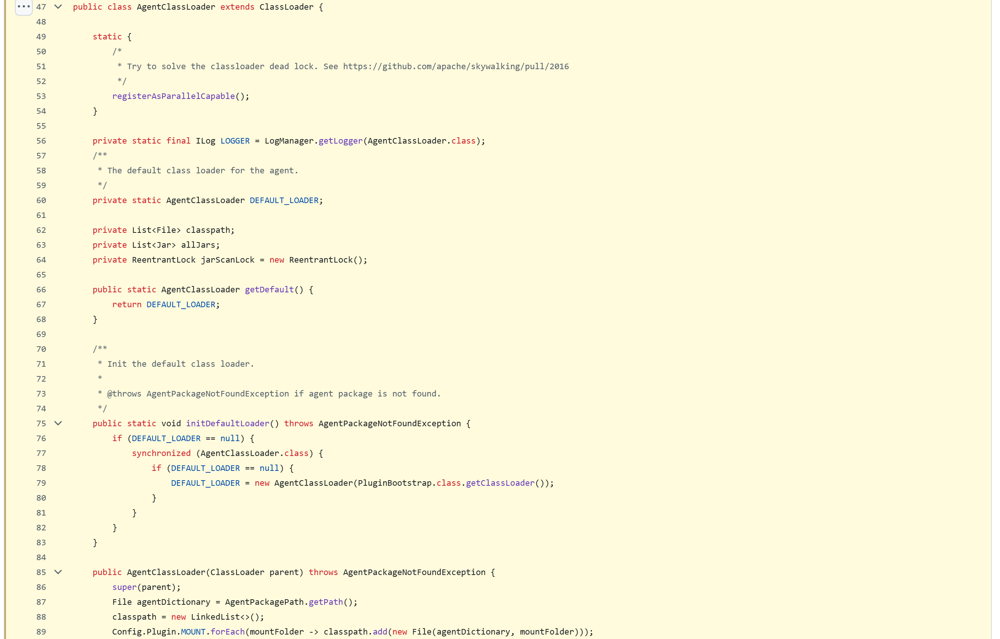
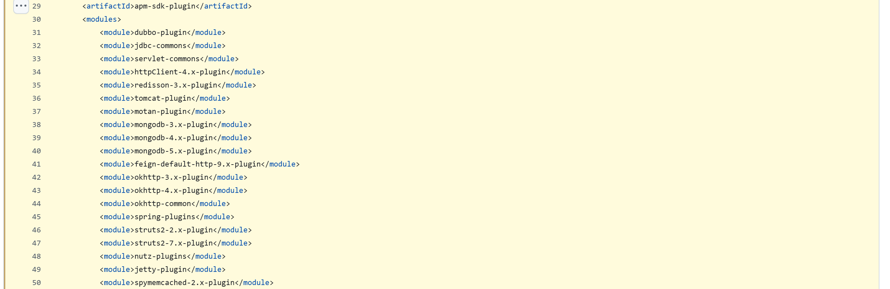
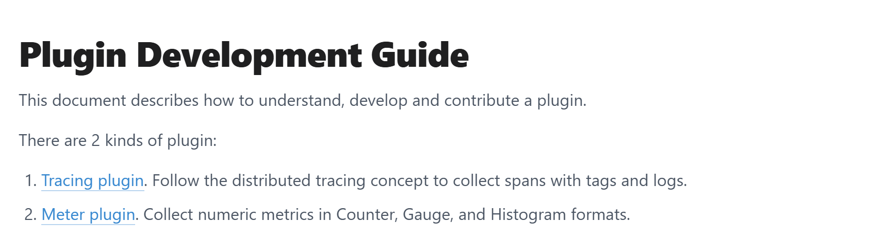

OSS PROJECT INTRO · SKYWALKING 系列第 5 期：架构与源码导读（收官）
上一期我们端到端追了一条跨进程调用链：两个微服务各挂一个 agent，瀑布两段相连，拓扑自己长出边。但应用一行没改，span 是怎么凭空出现的？本期收官，你带走一张读码路线图：沿字节码增强管线、类加载隔离、插件模型三个设计决策读进源码，把"凭空出现"拆成看得见的工序。源码仓库是 apache/skywalking-java，所有类名与路径逐条核对自 tag v9.7.0（2026-09 核对），跟读时先把仓库切到这个 tag。
先对齐进度。第 1 期立住无侵入的心智模型，第 2 期一键起全家看见调用链，第 3 期拆透概念地图：Trace 按进程切段、sw8 头续链、OAP 流式聚合，第 4 期实战把地图跑通。本期是系列收官，回答一个悬了四期的问题：agent 到底对应用做了什么。答案拆成三道工序，每道讲清楚为什么这么设计、解决什么问题、换种做法会怎样：
三道工序串起来就是本期成果：一条 span 从诞生到上报的完整路线图。两个钩子预告：agent 为什么非要自带一个类加载器（隔离），增强为什么恰好发生在类加载那一刻（时机）。
读码第一步钉版本。agent 源码不在主仓库，独立在 apache/skywalking-java，自己发版本（后端 v11.0.0 配 agent v9.7.0，第 3 期强调过别配对）。类会搬家、文件会改名，网上旧文章的路径大量对不上，但设计决策是稳定的——你跟读时先把仓库切到 tag v9.7.0。顶层模块地图（路径核对自 skywalking-java tag v9.7.0）：
skywalking-java @ tag v9.7.0 · agent 独立仓库
├─ apm-sniffer/ agent 本体（skywalking-agent.jar 从这构建）
│ ├─ apm-agent/ 启动模块：premain 入口 SkyWalkingAgent
│ ├─ apm-agent-core/ 增强内核：plugin / context / remote 三大包
│ ├─ apm-sdk-plugin/ 框架插件：114 个目录，一框架一目录
│ ├─ optional-plugins/ 可选插件：gson / mybatis / sentinel…
│ ├─ bootstrap-plugins/ 引导插件：jdk-http / jdk-threading 等 JDK 类
│ └─ apm-toolkit-activation/ @Trace 等工具包注解的激活器
├─ apm-application-toolkit/ 手动埋点工具包：@Trace / 跨线程 / 日志绑定
├─ apm-commons/ apm-datacarrier：上报前的内存缓冲队列
├─ apm-protocol/ agent 与 OAP 的 gRPC 协议定义
└─ docs/ test/ tools/ 文档源 / 插件兼容测试 / 工具本期读码的常驻模块就是 apm-sniffer，点开构建脚本里的模块清单对一眼：

apm-sniffer/pom.xml @ tag v9.7.0 第 28-42 行实拍：modules 清单十个子模块一眼列全——apm-agent（启动）、apm-agent-core（内核）、apm-sdk-plugin（插件）、apm-toolkit-activation、bootstrap-plugins、optional-plugins、bytebuddy-patch 等，pom 模块名与目录名一一对应（2026-09-19 截图）。记一句口诀：读码从内核进（apm-agent / apm-agent-core），往插件出（apm-sdk-plugin）。
JVM 对 Java agent 只留了一扇门：-javaagent 参数指向 jar 时，JVM 会先调（写成"调用"，防念错）jar 里 MANIFEST 指定的 premain 方法——它在你的 main 之前执行，参数里带一个 Instrumentation 实例，这是 JVM 官方给的"改写字节码"的授权。SkyWalking 的入口类是 org.apache.skywalking.apm.agent.SkyWalkingAgent（摘自 apm-sniffer/apm-agent/src/main/java/org/apache/skywalking/apm/agent/SkyWalkingAgent.java，tag v9.7.0，省略异常处理）：
public static void premain(String agentArgs, Instrumentation instrumentation) {
pluginFinder = new PluginFinder(new PluginBootstrap().loadPlugins());
installClassTransformer(instrumentation, pluginFinder); // 注册字节码改写器
ServiceManager.INSTANCE.boot(); // 启动上报等服务
Runtime.getRuntime().addShutdownHook(
new Thread(ServiceManager.INSTANCE::shutdown));
}四步就是全部骨架：读配置初始化（省略段）→ 加载全部插件描述 → 注册 Transformer → 启动服务。对一眼源码实拍：

SkyWalkingAgent.java @ tag v9.7.0 第 92-118 行实拍：插件加载、installClassTransformer、ServiceManager 启动与 shutdown 钩子，与上文摘录逐行对应（2026-09-19 截图）。增强的机制链画出来是这样的：
钩子二：增强为什么发生在类加载那一刻？因为 JVM 类只加载一次，字节码定稿后再改就迟了。在类加载的门口拦截，改写完的类直接进虚拟机运行——不需要应用重启配合、不需要代理类转发，更没有任何源码工程要动。换种做法会怎样？手动埋点要改代码、随发版走；运行时动态代理要改 Bean 装配、只罩得住 Spring 管理的 Bean；AOP 注解要全工程扫描、覆盖不了 Tomcat、JDBC 这些框架内部。类加载时改写是唯一能把覆盖面做到"框架层全包"的时机，代价是 agent 必须赶在一切之前就位——这也解释了第 2 期那条"首次启动稍慢"。
增强后的业务类要调用 agent 的拦截器，拦截器类从哪加载？答案是 agent 自带的 AgentClassLoader（摘自 apm-sniffer/apm-agent-core/src/main/java/org/apache/skywalking/apm/agent/core/plugin/loader/AgentClassLoader.java，tag v9.7.0，节选）：
public class AgentClassLoader extends ClassLoader {
static {
registerAsParallelCapable(); // 防类加载死锁
}
public AgentClassLoader(ClassLoader parent) {
super(parent);
Config.Plugin.MOUNT.forEach(mountFolder -> // MOUNT 默认
classpath.add(new File(agentDictionary, mountFolder)));
// plugins、activations 两个挂载目录
}
protected Class findClass(String name) { /* 只在 agent 自己的 jar 里找 */ }
}
AgentClassLoader.java @ tag v9.7.0 第 47-89 行实拍：static 块注册并行能力（注释原话 Try to solve the classloader dead lock）、initDefaultLoader 双检锁单例、构造器只登记 MOUNT 挂载目录（2026-09-19 截图）。为什么要多此一举？看一眼没隔离的世界就明白了。
| 场景 | 直接放 system classpath（反事实） | AgentClassLoader 隔离（现状） |
|---|---|---|
| agent 的 ByteBuddy 与宿主的同名类 | 谁先上 classpath 谁赢，宿主应用按到的可能是 agent 带的旧版，一行栈溢出查三天 | 两套类各加载各的，同名不同源互不打扰 |
| agent 依赖的 Netty、gRPC 版本 | 强行顶掉宿主自带的版本，序列化兼容性当场翻车 | agent 用自己的，宿主用宿主的 |
| 插件增删 | 混在应用 classpath 里无法按目录启停 | 挪动 jar 即启停（第 2 期的"插件清单即生效清单"） |
这就是所有 Java agent 的公共课题——Arthas、各类 APM 探针都绕不开：agent 是"寄生"在宿主进程里的，自己的依赖必须自己圈起来养，绝不能泄进宿主的 classpath。更进一步，每个插件 jar 里可能有同名拦截器类，SkyWalking 还有一层 InterceptorInstanceLoader：按宿主各自的 ClassLoader 缓存一份插件加载器（javadoc 原话点明要理解"Classloader appointment mechanism"，即双亲委派机制），保证拦截器实例与宿主上下文正确配对。换种做法——把 agent 的 jar 全塞进启动 classpath——单机 demo 能跑，一进有依赖冲突的真实应用就炸，这也是"装了 agent 应用起不来"这类事故的根。
打开 apm-sdk-plugin 的构建清单，一百一十四个插件目录一字排开（pom modules 清单核对 v9.7.0）：dubbo、grpc、kafka、mysql、redisson、lettuce、elasticsearch……每个目录就是一个框架的支持包：

apm-sdk-plugin/pom.xml @ tag v9.7.0 第 29-50 行实拍（前 20 个模块）：dubbo-plugin、httpClient-4.x-plugin、redisson-3.x-plugin、tomcat-plugin、mongodb、okhttp、spring-plugins、jetty 等，框架名和版本号写进模块名；全部 114 个插件目录经 modules 清单核对（2026-09-19 截图）。每个插件由两件东西组成。先是一份声明：增强哪个类、拦哪个方法、用哪个拦截器（摘自 apm-sdk-plugin/httpClient-4.x-plugin 的 AbstractHttpClientInstrumentation.java，tag v9.7.0，节选）：
public ClassMatch enhanceClass() {
return byName("org.apache.http.impl.client.AbstractHttpClient"); // 拦谁
}
public InstanceMethodsInterceptPoint[] getInstanceMethodsInterceptPoints() {
return new InstanceMethodsInterceptPoint[] {
getMethodsMatcher() → named("doExecute"), // 拦哪个方法
getMethodsInterceptor() → HttpClientExecuteInterceptor // 用哪个拦截器
};
}再是一组拦截器，接口三件套（摘自 apm-agent-core 的 InstanceMethodsAroundInterceptor.java，tag v9.7.0，签名原样）：
void beforeMethod(EnhancedInstance objInst, Method method,
Object[] allArguments, Class[] argumentsTypes,
MethodInterceptResult result); // 方法前：开 Span，参数全在手上
Object afterMethod(EnhancedInstance objInst, Method method,
Object[] allArguments, Class[] argumentsTypes,
Object ret); // 方法后：拿返回值，收 Span
void handleMethodException(...Throwable t); // 异常时：把 Span 标错出口插桩的拦截器就在 beforeMethod 里调（写成"调用"）ContextManager.createExitSpan 开出口 Span，在 afterMethod 里 stopSpan 收口——耗时、状态、标签全从这三个钩子的参数里来。插件化的价值在组织方式：内核只管"怎么改字节码"，每个插件只管"改哪个框架"，声明式拦截点让两者彻底解耦——所以官方支持清单能到一百三十多条，而且是社区并行列出来的，这就是"支持一百多个中间件"成为一项社区协作工程的机制答案。
开关设计也一眼可读：plugins/ 目录默认全启用（挪走即禁用）；optional-plugins/ 收着 gson、mybatis、sentinel、trace-ignore 这些有副作用或小众的，拷进 plugins 才生效；bootstrap-plugins/ 专攻 JDK 内置类（jdk-http、jdk-threading、虚拟线程执行器等），要走特殊的引导注入；apm-toolkit-activation/ 则是 @Trace 手动埋点注解的激活器——工具包 jar 躺在宿主，激活器负责把空实现替换成真埋点。第 4 期"挪动即启停"的谜底就在这。
拦截器产出的 span 去了哪？类坐标给全（均在 apm-agent-core，tag v9.7.0 核对）：
core/context/ContextManager.java 拦截器总入口：createEntry/Local/ExitSpan
core/context/TracingContext.java 进程内上下文：把 span 攒进当前段
core/context/trace/TraceSegment.java 一个进程一段（第 3 期概念的字面落点）
core/remote/TraceSegmentServiceClient.java gRPC 异步上报：
↳ TracingContext.ListenerManager.add(this) 段写完自动回调 afterFinished
↳ new DataCarrier<>(CHANNEL_SIZE, BUFFER_SIZE) 内存队列削峰
↳ TraceSegmentReportServiceGrpc → collect() 流式发给 OAP :11800串起来读：拦截器开收 Span → TracingContext 把当前进程的 Span 攒成一个 TraceSegment → 段写完，监听器回调把它放进 DataCarrier 内存队列（单消费者线程，队满则丢弃并计数，绝不阻塞业务线程）→ TraceSegmentServiceClient 批量经 gRPC 流式上报 OAP。第 3 期"Segment 单进程一段"的定义，在源码里就是这几个类各司其职；sw8 头的注入与解析，也落在 ContextManager 的 inject / extract 两个方法上。全期合成一张读码路线图：
OAP 侧（流式聚合）只指个路不展开：聚合引擎在主仓库 apache/skywalking 的 oap-server/ 下——oal-rt 与 oal-grammar（@ v11.0.0）是 OAL 分析语言的运行时与语法，agent 上报的 Segment 从 server-receiver-plugin 进去，被 OAL 脚本折算成第 3 期讲的指标与拓扑。agent 收、OAP 算，两个仓库各读各的。

官方《Plugin Development Guide》：给想给自家框架写插件的读者——声明 Instrumentation、写拦截器、打包进 plugins，正是本期读码路线的"动手版"（2026-09-19 截图，正文主栏）。收口之前，把可借鉴的三件事说透：
边界有三条。其一，作用对象：动态代理只能包住"通过容器拿到"的对象——Spring Bean、接口实现；而 Tomcat 的连接器、JDBC 的 Driver、Redis 客户端这些框架内部的类，不归任何容器管，代理根本够不着，只有类加载时改写字节码能拦。其二，生效时机：代理在应用装配时生效，改配置要重启上下文；字节码增强在类加载那一刻定稿，虚拟机里跑的就是改过的类。其三，代码感知：AOP 至少要求对象由框架创建，agent 连这一点都不要求——main 方法之前的 premain 就位，之后加载的一切类都在射程内。
所以判断标准是：要增强的类是否在"你的框架"手里。自家 Spring Bean 的切面用 AOP 足够、更可控；要观测"所有进出 JVM 的框架调用"，只能走 agent。反过来也要记住代价：字节码增强的排障门槛高（出错在字节码层，栈又深又陌生）、有版本兼容风险，所以 SkyWalking 才把增强面收窄到框架边界，而不是见类就改。
第一个出问题的多半是同名类版本仲裁：classpath 是扁平的，先到先得。agent 自带的 ByteBuddy、Netty、gRPC 与宿主应用的版本几乎必然不一致——如果 agent 的 jar 先加载，宿主按到的就是 agent 的版本，轻则 NoSuchMethodError，重则行为悄然变化；如果宿主先加载，agent 又可能因为拿到旧版 ByteBuddy 而增强失败。这类问题最恶毒的地方在于不总是立刻炸，往往在某个特定调用路径上才暴露，线上排障极难。
插件目录式隔离的妙处在于把"类可见性"变成了文件系统问题：AgentClassLoader 只扫描挂载目录里的 jar（Config.Plugin.MOUNT，默认 plugins 与 activations），findClass 只在这批 jar 里找——目录里有什么，类空间里就有什么。于是"启停一个插件"从改配置、重新打包，降级成挪一个文件，不需要懂类加载理论的人也能安全操作。顺带一提，bootstrap-plugins 处理 JDK 内置类时要走更特殊的引导注入路径，那是隔离体系里最硬的骨头，官方为此专门留了独立目录和 bytebuddy-patch 模块。
带走这五句：
Primary source：SkyWalking Java agent 官方文档 · Java Plugin Development Guide（latest = v9.7.0 文档线）——本期插件模型的官方出处；源码路径均核对自 github.com/apache/skywalking-java @ tag v9.7.0；OAP 侧 OAL 引擎见主仓库 apache/skywalking @ v11.0.0 · oap-server/oal-rt。
1. premain 方法在什么时机执行？
2. agent 为什么非要自带 AgentClassLoader？
3. 插件里 InstanceMethodsAroundInterceptor 的 afterMethod 拿不到哪样东西？
4. 想启用 optional-plugins 里的某个插件，正确动作是？